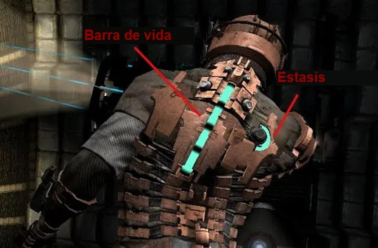

La cara del juego
HUD, menú y pantalla de Game Over, escritos en vivo sobre el survivors. CanvasLayer, nodos Control, botones, cambio de escenas y un Autoload que recuerda la partida.
“La UI no es decoración: es lo que el juego le dice al jugador.”
Cómo va a ser la clase de hoy
🔴 Cuatro bloques en vivo
Sobre el proyecto clase-05, con el jefe de la Clase 8+.
- HUD: una barra de vida que cambia de color
- Menú: botones y cambio de escena
- Partida: tiempo y slimes que sobreviven al cambio de escena
- Game Over: el resultado, el récord y “Reintentar”
👐 Las reglas de siempre
- El código se escribe, no se pega.
- Cada bloque termina con un punto de control en pantalla o en la consola.
- Hoy se arma mucho en el editor: nodos, anclas, contenedores. El código es corto.
Un juego no es una pantalla: son varias
🏠 Menú
menu.tscn
título + Jugar + Salir
⚔️ Arena
arena.tscn
el juego + el HUD
💀 Game Over
game_over.tscn
resultado + Reintentar + Menú
Botón Jugar → change_scene_to_file()
La vida llega a 0 → change_scene_to_file()
Botón Reintentar → change_scene_to_file()
arena.tscn tiene el jugador, los slimes, el jefe y la bomba de Enter (arena.gd). Cuando la vida llega a 0… no pasa nada: el jugador sigue con vida negativa. Eso se arregla en el bloque 2.La cámara se mueve… ¿y la UI?
❌ UI dentro del mundoEl HUD cuelga de la arena: se va con la cámara.
✅ UI en un CanvasLayerOtra capa, pegada a la pantalla: no se mueve nunca.
Control y se ubican respecto a la pantalla. Si la arena tiembla con el screenshake de la Clase 7, el HUD en un CanvasLayer no tiembla.Los nodos Control de hoy
Texto que cambia desde el código con .text.
Emite la señal pressed al hacer clic.
Barra de vida: value entre min_value y max_value.
Un rectángulo de color: el fondo de un menú.
Acomoda a sus hijos en columna, solos. HBox: en fila.
No es un Control: es la capa donde viven.
El mismo HUD, en juegos de verdad

Label y TextureRect en un contenedor.
HBoxContainer.
CanvasLayer. La del élite del survivors es diegética: un ProgressBar hijo de un nodo del mundo. Los mismos nodos, en otro lugar del árbol.El jugador avisa; el HUD muestra
El árbol
Arena (Node2D) arena.gd
├── Jugador jugador.gd
├── Spawner
├── Enemigos
└── HUD (CanvasLayer) hud.gd
├── BarraVida (ProgressBar)
├── LabelTiempo (Label)
└── LabelKills (Label)
🔌 @onready: buscar un nodo cuando el árbol ya existe
@onready var barra = $BarraVida # es lo mismo que: var barra func _ready(): barra = $BarraVida
Sin @onready, la variable se llena al crear el script, antes de que el nodo esté en el árbol: $BarraVida todavía no existe.
actualizar_vida(vida). Si mañana la vida se muestra con corazones, se cambia solo hud.gd.Una barra de vida que cambia de color
# hud.gd (en el nodo HUD) extends CanvasLayer @onready var barra = $BarraVida func actualizar_vida(vida): barra.value = vida if vida <= 25: barra.modulate = Color.RED elif vida <= 50: barra.modulate = Color.YELLOW else: barra.modulate = Color.GREEN # jugador.gd: lo marcado es nuevo @onready var hud = get_node("../HUD") func recibir_dano(cantidad): vida -= cantidad hud.actualizar_vida(vida)
- Hijo de
Arena:CanvasLayerllamado HUD - Hijo de
HUD:ProgressBarBarraVida. Max100, Value100, Show Percentage apagado, arriba a la izquierda - Attach Script en
HUD:hud.gd - En
jugador.gd: el@onreadyy la llamada. Elprintde la vida se puede borrar - F6 y dejarse tocar
@onready del jugador: error Node not found, porque se busca el HUD antes de que exista el árbol.Un menú: anclas, un contenedor y dos botones
El árbol de menu.tscn
Menu (Control) menu.gd
├── Fondo (ColorRect) ← ancla Full Rect
└── Botonera (VBoxContainer) ← ancla Center
├── Titulo (Label)
├── BtnJugar (Button)
└── BtnSalir (Button)
En 2D, lo que está más abajo en el árbol se dibuja encima: el Fondo va primero.
⚓ Anclas
Le dicen a un Control a qué parte de la pantalla pegarse. Full Rect: ocupar todo. Center: quedarse en el medio. Con anclas, el menú se ve bien en cualquier resolución.
🖱️ La señal pressed
Un Button la emite al hacer clic. Se conecta igual que body_entered o timeout: $Boton.pressed.connect(funcion).
El menú, y que el juego arranque ahí
# menu.gd extends Control func _ready(): $Botonera/BtnJugar.pressed.connect(_on_jugar) $Botonera/BtnSalir.pressed.connect(_on_salir) $Botonera/BtnJugar.grab_focus() # Enter también juega func _on_jugar(): get_tree().change_scene_to_file("res://arena.tscn") func _on_salir(): get_tree().quit() # jugador.gd: al quedarse sin vida, al menú func recibir_dano(cantidad): vida -= cantidad hud.actualizar_vida(vida) if vida <= 0: get_tree().change_scene_to_file("res://menu.tscn")
- Escena nueva:
ControlMenu, guardar comomenu.tscn ColorRectFondo (Full Rect) yVBoxContainerBotonera (Center) con el título y los dos botonesmenu.gdy el cambio enjugador.gd- Project Settings → Application → Run → Main Scene =
menu.tscn - F5 (no F6): corre el juego desde la escena principal
"res://Arena.tscn", con mayúscula: el botón no hace nada y la consola avisa. Las rutas se copian del FileSystem, exactas.Al cambiar de escena, se borra todo
El problema
change_scene_to_file() descarga la escena entera: el jugador, sus variables, los slimes. Si el tiempo y los slimes eliminados viven en el jugador, la pantalla de Game Over no tiene de dónde leerlos.
La solución: un Autoload
Un script que Godot carga una vez, al abrir el juego, y deja siempre en el árbol, fuera de cualquier escena. Desde cualquier script se lo llama por su nombre: Partida.kills.
root
├── Partida ← el Autoload: nunca se borra
└── Arena ← la escena actual: se cambia
├── Jugador
└── …
partida.gd con el nombre Partida. Es la forma estándar de compartir datos entre escenas.Partida: tiempo y slimes
# partida.gd (Autoload "Partida") extends Node var kills = 0 var tiempo = 0.0 var mejor_tiempo = 0.0 func reiniciar(): kills = 0 tiempo = 0.0 # arena.gd, dentro de _process (junto a la bomba): Partida.tiempo += delta # enemigo.gd, en morir(), antes del queue_free(): Partida.kills += 1 # menu.gd, en _on_jugar(), antes de cambiar de escena: Partida.reiniciar() # hud.gd: mostrar lo que hay en Partida func _process(delta): $LabelTiempo.text = "Tiempo: " + str(int(Partida.tiempo)) $LabelKills.text = "Slimes: " + str(Partida.kills)
- FileSystem → New Script, hereda de
Node:partida.gd - Project Settings → Globals → Autoload: ese archivo, nombre Partida, Add
- En el
HUD: dosLabel, LabelTiempo y LabelKills - Las cuatro líneas nuevas y el
_processdel HUD - F5, jugar, morir, volver a jugar
Partida.reiniciar(): al volver a jugar, el tiempo sigue desde donde estaba. Es la prueba de que Partida no se borra con la escena.Game Over: el menú, con un resultado
El árbol de game_over.tscn
GameOver (Control) game_over.gd
├── Fondo (ColorRect) ← Full Rect, rojo oscuro
└── Botonera (VBoxContainer) ← Center
├── Titulo (Label) "GAME OVER"
├── LabelResultado (Label)
├── LabelRecord (Label)
├── BtnReintentar (Button)
└── BtnMenu (Button)
Es la estructura del menú con dos Label más. Se puede duplicar menu.tscn y cambiarla.
🏆 El récord de la sesión
Al abrir la pantalla: si el tiempo de esta partida supera a Partida.mejor_tiempo, es el nuevo récord. Como Partida no se borra, el récord dura mientras el juego esté abierto.
FileAccess) queda como extra del TP.Resultado, récord y “Reintentar”
# game_over.gd extends Control func _ready(): var s = str(int(Partida.tiempo)) $Botonera/LabelResultado.text = "Tiempo: " + s + " s · Slimes eliminados: " + str(Partida.kills) if Partida.tiempo > Partida.mejor_tiempo: Partida.mejor_tiempo = Partida.tiempo $Botonera/LabelRecord.text = "¡Nuevo récord!" else: $Botonera/LabelRecord.text = "Récord: " + str(int(Partida.mejor_tiempo)) + " s" $Botonera/BtnReintentar.pressed.connect(_on_reintentar) $Botonera/BtnMenu.pressed.connect(_on_menu) func _on_reintentar(): Partida.reiniciar() get_tree().change_scene_to_file("res://arena.tscn") func _on_menu(): get_tree().change_scene_to_file("res://menu.tscn") # jugador.gd, en recibir_dano(): al Game Over get_tree().change_scene_to_file("res://game_over.tscn")
- Duplicar
menu.tscncomogame_over.tscn: renombrar, sumar los dosLabel, cambiar los botones - Quitarle el script del menú y crear
game_over.gd - En
jugador.gd, la ruta nueva - F5 y perder dos veces
Partida vive mientras el juego está abierto, no más.Qué hace cada pieza nueva
| Línea | Qué hace y por qué |
|---|---|
extends CanvasLayer | El HUD es una capa aparte: no se mueve con la cámara ni tiembla con ella. |
@onready var barra = $BarraVida | Guarda el nodo cuando el árbol ya está armado. Sin @onready, todavía no existe. |
barra.modulate = Color.RED | Tiñe la barra. La información más urgente, con el color más urgente. |
$Boton.pressed.connect(f) | La misma forma de conectar señales de siempre, ahora con un botón. |
change_scene_to_file("res://…") | Descarga la escena actual entera y carga otra. Todo lo que había, se pierde. |
Partida.tiempo += delta | Suma los segundos reales de cada frame en el Autoload, que sobrevive al cambio. |
str(int(Partida.tiempo)) | int() corta los decimales (37.82 → 37) y str() lo vuelve texto. |
grab_focus() | Deja un botón seleccionado: se puede jugar con Enter, sin mouse. |
Cuando “no anda”: los sospechosos de hoy
| Síntoma | Casi siempre es… |
|---|---|
| El menú no aparece al apretar F5 | Falta la Main Scene, o se está usando F6 (corre la escena abierta). |
| El botón no hace nada | La señal no se conectó, o la ruta $Botonera/BtnJugar no coincide con el árbol. |
Identifier "Partida" not declared | El Autoload no está registrado, o se llama distinto (mayúsculas incluidas). |
| El tiempo no vuelve a 0 al jugar de nuevo | Falta Partida.reiniciar() en el botón. |
| El fondo tapa los botones | El ColorRect está debajo de la Botonera en el árbol: tiene que ir primero. |
| Los botones quedan en una esquina | Falta el ancla Center en la Botonera, o los botones no son hijos del contenedor. |
| La barra no cambia de color | Se tiñe el HUD en vez de la barra, o la función no se llama desde el jugador. |
Desafío: pausa con Esc
- Otro
CanvasLayeren la arena: Pausa, con unLabelgrande que diga PAUSA. Invisible al empezar - Un script en
Pausa: conui_cancel(Esc),get_tree().paused = not get_tree().paused, y el cartel visible solo si está en pausa - Probar… y descubrir por qué la segunda vez Esc no responde
_process en todos los nodos, también en el que escucha Esc. Buscar en el Inspector de Pausa la propiedad Process → Mode.¿Y el tiempo de Partida? Se detiene solo, porque arena.gd también está en pausa. Es justo lo que tiene que pasar.
Todo lo que se escribió hoy
| Pieza | Para qué sirve | Bloque |
|---|---|---|
CanvasLayer + Control | UI pegada a la pantalla, encima del juego | 1 |
@onready | Guardar un nodo cuando el árbol ya existe | 1 |
ProgressBar + modulate | Mostrar la vida, y teñirla según cuánto queda | 1 |
Anclas + VBoxContainer | Un menú que se acomoda solo en cualquier pantalla | 2 |
pressed + change_scene_to_file() | Pasar de una pantalla a otra | 2 |
| Main Scene + F5 | Que el juego arranque en el menú | 2 |
Autoload Partida | Datos que sobreviven al cambio de escena | 3 |
| Récord de la sesión | Comparar con lo guardado y actualizarlo | 4 |
El TP de la semana: terminar el juego
📝 TP 5: el survivors, completo
- Lo de hoy sobre el TP4: menú, HUD con tiempo,
Partiday Game Over - La planilla de la Clase 7: sonido, flash, parpadeo y temblor
- Exportar a un
.exeque corra sin Godot - El aporte propio: una idea que se muestra en la semana 6
📚 Recursos
- Docs: Size and anchors y Using containers, en
docs.godotengine.org - Docs: Singletons (Autoload)
- Docs: Change scenes manually
La semana que viene: cada uno muestra su juego. · Capturas de juegos: uso educativo, © de sus dueños. · Logo de Godot © Godot Foundation — CC BY 4.0.